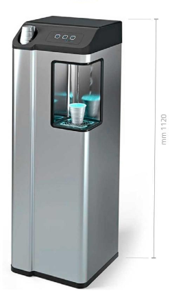

GREENQUALITY AC
Naturale e Fredda a Rete Idrica
- • Eroga acqua naturale a temperatura ambiente e fredda
- • Consigliato per uffici fino a 30–40 persone
- • Filtrazione microfine 8", capacità filtrante 3.000 litri in condizioni standard
- • Capacità refrigerante: 28 L/h — 5 litri di acqua fredda in continuo
- • Punto di erogazione ad altezza 256 mm, compatibile con bicchiere e borraccia
- • Vaschetta raccogli gocce, collegamento allo scarico possibile
- • Refrigerazione a banco di ghiaccio
- • Alimentazione 230V monofase — Dimensioni: 33,4 × 33 × 112 cm
- • Costruito in Italia nel rispetto del DM 25/2012
- • Disponibile anche in versione GREENQUALITY GAS, con acqua frizzante
Due configurazioni
Le due versioni
GREENQUALITY AC
Acqua naturale a temperatura ambiente e fredda.
GREENQUALITY GAS
Le stesse caratteristiche della versione AC, con bombola CO2 e carbonatore integrati per l'acqua frizzante.
Il noleggio passo per passo
Come funziona
1
Sopralluogo e allaccio alla rete idrica
Verifichiamo il punto di installazione e colleghiamo l'erogatore alla rete idrica, a nostro carico.
2
Erogazione continua
Acqua filtrata, naturale e fredda sempre disponibile, senza boccioni da sostituire.
3
Manutenzione annuale inclusa
Una volta all'anno effettuiamo il cambio filtri e la sanificazione, inclusi nel canone di noleggio.
Perché sceglierlo
Vantaggi
Erogazione continua
Acqua sempre disponibile, senza ricariche né boccioni da gestire.
Manutenzione inclusa
Cambio filtri e sanificazione una volta all'anno, per tutta la durata del noleggio.
Installazione a nostro carico
Ci occupiamo noi dell'allaccio alla rete idrica, senza costi aggiuntivi.
Analisi batteriologica su richiesta
Disponibile una volta all'anno, su richiesta del cliente.
Cosa include il canone
- • Noleggio 48 mesi
- • Installazione a nostro carico
- • Manutenzione a nostro carico, senza limiti di interventi
- • Cambio filtri e sanificazione una volta all'anno
- • Analisi batteriologica disponibile su richiesta una volta all'anno
Quale scegliere
Rete idrica o erogatore a boccioni?
Erogatore a rete idrica
- • Erogazione continua, senza ricariche
- • Richiede allaccio alla rete idrica
- • Manutenzione annuale inclusa nel canone
- • Indicato per uffici fino a 30–40 persone
Erogatore a boccioni
- • Nessun collegamento idraulico
- • Richiede sostituzione periodica dei boccioni
- • Indicato per uffici fino a circa 15 persone
Non sai quale scegliere? Confrontalo con il nostro erogatore a boccioni, oppure scopri i totem e le colonnine ad osmosi per Uffici/HoReCa per portate ancora più alte.
Domande frequenti
Erogatore a rete idrica: le domande più comuni
Serve un allaccio idraulico per installare l'erogatore?
Sì, il refrigeratore GREENQUALITY si collega direttamente alla rete idrica dell'ufficio. Il collegamento è a nostro carico ed è incluso nel canone di noleggio.
Quante persone può servire un erogatore a rete idrica?
Il refrigeratore GREENQUALITY è indicato per uffici fino a 30-40 persone. Per volumi più alti, valuta i totem e le colonnine della sezione Uffici/HoReCa.
Cosa include il canone di noleggio?
Il canone di 48 mesi include l'installazione, la manutenzione senza limiti di interventi, il cambio filtri e la sanificazione una volta all'anno, e l'analisi batteriologica su richiesta una volta all'anno.
Che differenza c'è tra la versione AC e la versione GAS?
Le due versioni hanno le stesse caratteristiche tecniche. La versione GAS aggiunge una bombola di CO2 e un carbonatore per erogare anche acqua frizzante, oltre a naturale e fredda.
Che differenza c'è tra erogatore a rete idrica ed erogatore a boccioni?
L'erogatore a rete idrica si collega alla rete idrica dell'ufficio ed eroga acqua in continuo, senza ricariche. L'erogatore a boccioni non richiede alcun collegamento idraulico ma va rifornito periodicamente con boccioni da 18 litri.
Quanto dura il contratto di noleggio?
Il noleggio ha una durata di 48 mesi, con installazione, manutenzione e cambio filtri inclusi nel canone per tutta la durata del contratto.